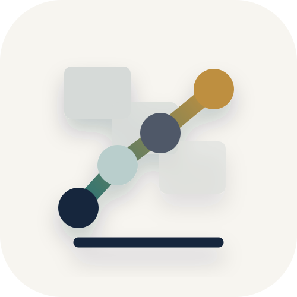
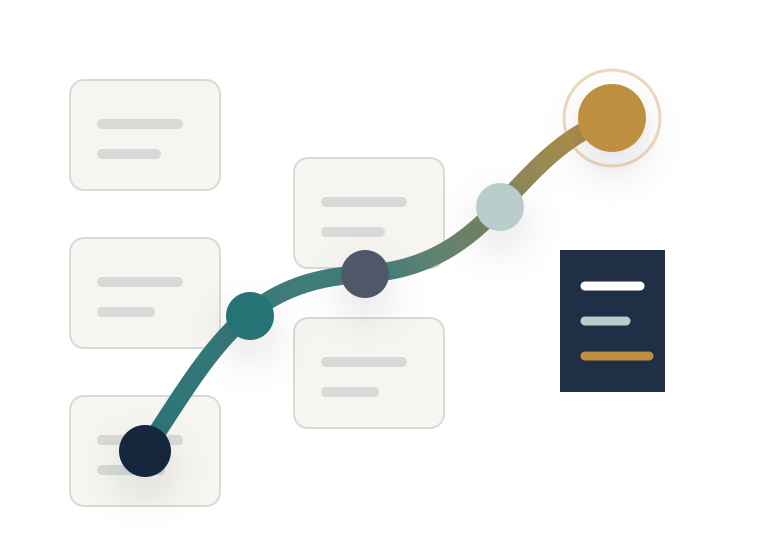
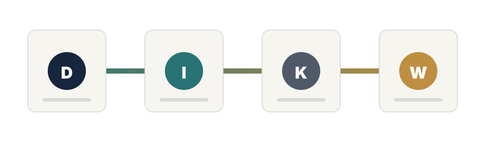

앞뒤 사정 보기
같은 말과 기록도 상황이 바뀌면 뜻이 달라집니다. 목적, 제약, 이해관계, 시간 압박을 함께 봅니다.
- 목적
- 그 기록이 왜 생겼는지 봅니다. 고객 요청 처리, 장애 원인 확인, 일정 조율처럼 문제의 방향을 정합니다.
- 제약
- 권한, 예산, 일정, 보안처럼 선택을 제한하는 조건을 따로 표시합니다.
- 이해관계
- 고객, 담당자, 승인자, 운영자 중 누가 영향을 받는지 연결합니다.

Contextual Wisdom LabContextual Wisdom Lab
구슬이 서 말이어도 꿰어야 보배이듯, 문서, 메일, 로그, 회의록을 맥락 안에서 엮어 사람이 무엇을 결정하고 무엇을 실행할지 보이게 하는 AI 의사결정 지원 시스템을 연구하고 만듭니다.

Contextual Wisdom은 많이 아는 상태가 아니라, 구체적인 맥락 안에서 판단과 실행으로 건너가는 과정을 뜻합니다. 메일, 문서, 로그, 일정 사이의 흩어진 맥락을 묶어 오늘 결정할 것과 다음 행동을 보이게 합니다.
같은 말과 기록도 상황이 바뀌면 뜻이 달라집니다. 목적, 제약, 이해관계, 시간 압박을 함께 봅니다.
길이를 줄이는 데서 멈추지 않습니다. 증거, 맥락, 리스크, 선택지를 엮어 사람이 판단할 수 있는 구조를 만듭니다.
좋은 구조는 읽고 끝나지 않습니다. 결정할 것, 확인할 가정, 다음 행동, 위임과 기록으로 이어져야 합니다.
정보가 부족해서가 아니라, 판단해야 할 맥락이 흩어져 있어서 어렵습니다. 사람이 버거워지는 순간은 데이터가 많을 때가 아니라 맥락을 다시 조립해야 할 때입니다.
메일에는 요청, 첨부에는 근거, 회의록에는 결정, 일정에는 기한이 따로 남습니다. 한 화면에 같이 있어야 판단할 수 있습니다.
승인한 이유, 보류한 조건, 당시 제약, 빠진 반례가 시간이 지나면 흐려집니다.
오늘 결정할 것, 더 확인할 것, 맡을 사람, 기한, 남길 기록이 한 흐름으로 보여야 합니다.
PPTX의 흐름은 기업 자료, 맥락화, 판단 포인트, 실행 연결입니다. DIKW는 이 흐름을 자동 상승 위계로 보자는 말이 아니라, 자료가 판단 근거로 쓰일 준비가 되었는지 묻는 점검 질문입니다.

메일 요청, 회의록 문장, 로그 오류, VOC, 일정 변경처럼 아직 서로 연결되지 않은 기록입니다.
작성자, 시점, 프로젝트, 고객, 권한, 의사결정 기준을 붙여 기록이 무엇을 뜻하는지 보이게 합니다.
반복되는 패턴, 예외, 원인 후보, 제약, 담당 절차를 묶어 무엇을 판단해야 하는지 드러냅니다.
승인, 보류, 위임, 추가 확인처럼 가능한 선택을 비교하고 다음 담당자와 기한으로 연결합니다.
기록을 모았다고 판단이 끝나지는 않습니다. 화면은 원문, 맥락, 리스크, 선택지를 분리해서 보여주고, 마지막에는 사람이 고를 수 있는 행동으로 좁혀야 합니다.
요약만 있으면 확인할 수 없습니다. 메일 원문, 회의록 문장, 로그 위치, 첨부파일을 함께 둡니다.
누가, 언제, 어떤 고객과 프로젝트에서, 어떤 권한과 기준으로 남긴 기록인지 같이 보여줍니다.
빠진 첨부, 다른 로그, 일정 충돌, 권한 충돌처럼 결론을 바꿀 수 있는 조건을 따로 표시합니다.
승인, 보류, 위임, 추가 확인 중 지금 가능한 선택을 보여주고 담당자, 기한, 남길 기록으로 이어갑니다.
DIKW를 그대로 믿지 않고 제품 원칙으로 옮기기 위해 참고한 자료입니다.
사각형은 문서, 메일, 로그처럼 따로 남은 기록입니다. 선은 그 기록을 한 질문 아래 연결하는 흐름입니다. 끝점은 정답이 아니라 다음으로 확인하거나 선택할 지점입니다.
메일함은 메시지 목록이 아니라 요청, 첨부, 일정, 관계, 책임이 흐르는 곳입니다. Naruon은 그 흐름을 모아 오늘 판단할 일과 다음 행동을 보이게 하는 AI 워크스페이스입니다.
메일, 첨부, 일정, 작업을 한 흐름으로 모읍니다.
보낸 사람, 프로젝트, 관계, 타임라인, 근거를 연결합니다.
대기 작업, 일정 충돌, 답장, 위임, 확인 요청으로 이어갑니다.
Fork가 아니면서 공개된 제품과 도구 저장소입니다. 홈페이지, 조직 프로필처럼 운영과 소개를 위한 내부 관리용 저장소는 제외했습니다.
메일, 첨부, 일정, 작업을 맥락으로 묶어 판단과 실행으로 연결하는 AI 이메일 워크스페이스입니다.
PostgreSQL 스키마를 리버스 엔지니어링하고 ERD와 DDL 공유 흐름으로 관리하는 클라우드 MVP입니다.
곡을 섹션, 역할, 템포, 연습 우선순위로 분석하는 로컬 우선 리허설 앱입니다.
긴 녹음을 메타데이터를 보존한 FLAC/Opus 조각으로 변환하는 Python CLI입니다.
스캔된 일본어 신문 PDF를 기사, 제목, 본문, 이미지 구조의 DOM형 JSON으로 파싱하는 API입니다.
트리 편집, 진행률 계산, CSV/JSON, 주간 Gantt를 지원하는 정적 HTML/CSS/JS WBS 플래너입니다.
바이브코딩 앱을 위한 보안 가드레일입니다. AI 개발 도구 규칙, 정적 점검, 리뷰와 수정 프롬프트를 다룹니다.
맥락지혜 연구실이 직접 만든 프로젝트와 구분해, 외부 upstream에서 출발해 조직 안에서 검토하거나 확장하는 저장소입니다.
Fork of vibemafiaclub/argos. Claude Code·Codex 팀의 토큰, 스킬, 세션 사용 패턴을 분석하는 애널리틱스입니다.
Fork of vibemafiaclub/vooster. 사람과 AI가 함께 제품 행동과 유스케이스를 관리하는 vspec 도구입니다.
Fork of vibemafiaclub/vooster-v2-mvp. goals, features, specs 구조로 제품 행동 명세를 다루는 TypeScript CLI MVP입니다.
맥락지혜 연구실은 한 문장으로 답하는 AI보다, 판단 전까지 사람이 손으로 하던 정리 일을 줄이는 시스템을 봅니다.
관계, 출처, 기준, 리스크를 함께 보존하는 지식 구조.
오늘 결정할 것과 확인할 가정을 드러내는 화면.
인증, 권한, 보안, 감사, 사용량 책임이 작동하는 운영 기반.
반복 탐색은 줄이고 근거 확인과 사람의 판단은 남기는 흐름.